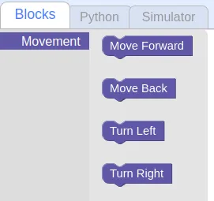
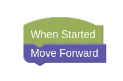
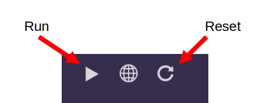
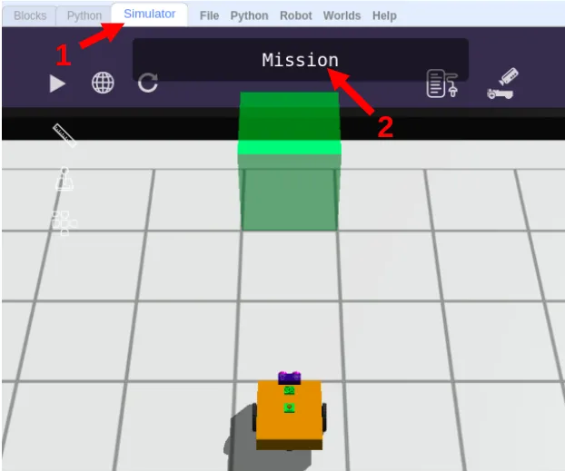

Sequences
Let's find out about Sequential programs in GearsBot.
Blocks Tab
Navigate to the Blocks tab. Right now, you only have one category of blocks; Movement.
As you progress through the lessons, we will add more categories for you to use.
You can drag and drop blocks from those panels into the coding canvas.
When Started
The main program will start executing code from the When Started event. When you press the Run button in the simulator, this is where the robot code begins.

Statements
The fundamental unit of a code is an execution statement.
Do this.
Do that.
When we program a bunch of these statements one after the other, the hub will execute them in the same order.
This is called a sequence, meaning one statement follows another.
Sequences
Let's try some simple code sequences.
First, let's make the robot move forward.
Robot Movement
Find the Movement tab, and look at the choices...

Forward
Let's make the robot move 1 block forward.
Drag a Move Forward block, and place it below When Started:

Now switch to the Simulation tab and click Run.

Your robot should move forward.
Challenges
Now we have a series of challenges for you to try out.
For each challenge, click on the Simulator Tab, then the Mission button to see the mission you need to do.

Follow instructions and note down the special Code after doing the challenge successfully!
Challenge 1
-
Load this challenge
-
This first one is simple; you just need to move forward.
Challenge 2
-
Load this challenge
-
What if happens if you put it multiple
Move Forwardblocks?